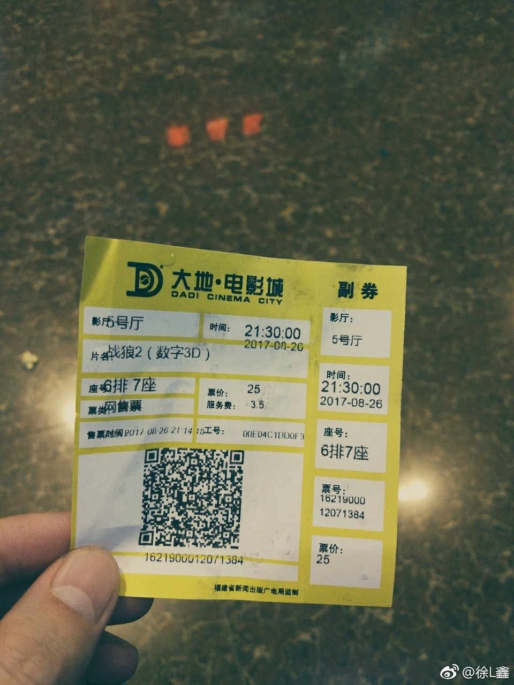

哈哈，不好意思，这次只有一张。以后有机会继续给大家送电影票~昨天我也去电影院看了两部。星际特工情节很一般，但是画面真的太炫了。想象力丰富，可以试试imax。极盗车神个人不喜欢，只给2星。@徐小包s:作为第二名，居然也有电影票，我很幸运，也很意外，再次感谢@ETF拯救世界 赠票，建议以后也可以多谈谈投资之外的话题。抛开的爱国主义情怀，《战狼2》确实也是值得一看的。但电影，你永远不知道它为什么会火，为什么会红，天时，地利，人和吧。看完这部电影，让我想起巴菲特说的一句话，"我很幸运。 